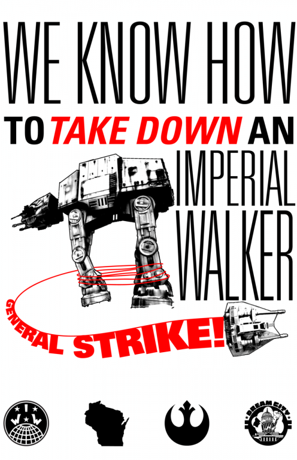

The general strike that didn't happen: a report on the activity of the IWW in Wisconsin
This is a report written by two IWW organizers from out of state on the activities of the union during the height of the protests in Madison and Wisconsin. The version is slightly modified from a text sent to the 2011 Delegate Convention and reflects the opinion of the authors.
By Juan Conatz and Brendan Sawyers
Shortly before Valentine’s day of 2011, Wisconsin Governor Scott Walker announced a budget bill which, along with a package of severe neoliberal cuts to social services, took the unprecedented measure of effectively outlawing unions for state or municipal employees. In order to ‘balance the budget’, the bill made it illegal for unions and public entities to negotiate on any conditions (work safety, hours of work, pensions, healthcare) other than wages, and outlawed any contracts which would give wage increases above the official rate of inflation, unless a referendum was held to approve those raises.
Furthermore unions would no longer be able to rely on the ‘dues check-off’, in which the employer collects the dues on behalf of the union. Finally, unions would be required to undergo a ‘re-certification’ election every year in order to be considered legitimate bargaining agents. On top of this were roughly 20% pay-cuts for all public employees!
From the start, Walker acknowledged the power that workers had to shut down the state: against the possibility of a strike by prison guards who form a large portion of Wisconsin's state employees, he threatened to use the Wisconsin national guard as strikebreakers. To ensure loyalty, the Police and Firefighters’ unions would keep their bargaining rights, although they would still take a pay cut (although this eventually changed).
This was an especially drastic move in the traditionally labor-oriented Wisconsin, home of the first socialist member of Congress and the last socialist mayor of a major city (Milwaukee), not to mention the ‘progressive’ Republicans of ‘Fighting Bob’ Lafollette. On February 14, 2011, after seventeen hours of testimony by the public on how the bill would effect them, the large group of people in the capitol realized that their testimony was not going to stop the bill, and that they were already effectively occupying the Capitol. They decided to stay. At the same time, teachers in Madison and several other school districts held effective sick-outs - in other words unofficial strikes - that were supported by student walkouts and lasted for several days.
In response to this mass ferment of working-class activity there was an emergency meeting of Midwestern IWW members (Twin Cities, Madison, Chicago) to plan an organized response and activity within the growing demonstrations. The participants decided to make an absolute priority of agitating for a general strike. Within this strategy, they examined the specific abilities of the Madison branch, as they were closest to the epicenter. The Madison IWW was a relatively small and somewhat disorganized branch, having a few of Madison’s many worker-owned cooperatives affiliated with it, but with years having passed with no independent shop-floor organizing. The Madison IWW nevertheless had one attribute that many IWW branches lack: of its small membership, a large number were ‘dual-carders’, that is, workers who hold a red IWW membership card along with their membership in a business union. These dual-carders ranged from an apprentice in the building trades to several long-time members of public sector unions, all of whom were known to the labor-left of Madison as basically solid militants.
To clarify the term ‘labor-left’, we mean that group which tends to coalesce around efforts to use the established union structures and is composed of an assortment of rank-and-file workers, low-level officers, and the occasional staff member, with members of leftist, generally Trotskyist, groups sprinkled in at all levels. This group can be seen as a spectrum, with one end that represents a real opposition to class-collaborationist policies of the union leadership while the other represents a mere pseudo-opposition. What unites this group is that they seek to improve or capture the existing unions as they are and very rarely focus on workers’ self-activity, nor the structural issues that have built a chasm between the business unions and workers’ self-activity.
The IWW members at the meeting decided that these ‘dual-carders’ would make two proposals at the upcoming meeting of the South-Central Federation of Labor (SCFL): first, to endorse a general strike and create an ad-hoc ‘Education Committee’ which could instruct affiliated locals on how they could “prepare for a general strike”; and second, to officially oppose all of the cuts that were contained in Walker’s bill. These proposals passed nearly unanimously.
The second proposal, though less dramatic than the first, was seen as important because the two most powerful officers of public-sector unions in Wisconsin had already publicly begged the governor for a compromise in which they would dampen opposition to all of the cuts in the new law, including the cuts in their own members’ pay, as long as they could keep their precious union-shop clauses, dues-checkoff, and collective bargaining rights. The IWW dual-carders hoped to polarize the union members who had taken to the streets against the sell-out policies of their leaders, and to make it more difficult for those leaders to accept a ‘victory’ that would attack large portions of the working class and reinforce the view among unemployed and non-union workers that the unions are only concerned about their own members.
The first proposal is the one that attracted the attention of the media and the left. Sixty-five years after the last ‘official’ general strike, of Oakland workers in 1946 (though only five years after immigrant workers had organized themselves to halt work coast-to-coast on May 1 2006), here was a local union federation that had the gall to endorse a general strike. Yet despite the criticisms of the AFL-CIO and Democratic party machinery, who accused the SCFL delegates of acting too hastily by calling for a general strike outside of their authority, the SCFL delegates knew that they did not have the authority to call for a general strike. What they did was nothing more, though nothing less, than to endorse and, in a limited way,prepare for a general strike.
This regional IWW meeting prepared the way for what is likely the largest, most concerted, and most successful intervention in a working-class struggle that the IWW has undertaken since the working-class ferment of the 1930s, at least. From mid-February to mid-March, the idea of a general strike was ever-present, such that nearly everyone in Wisconsin had to form an opinion on whether it would be feasible, successful, or justified. Even in many other parts of the country, from New York to California, the notion of a general strike became a legitimate topic for debate outside of the leftist milieu.
It is very doubtful whether this would have happened without the activity of the IWW. IWW members from across the union coordinated their activity, and as a result the organization had an impact in the overall mood of the working-class greater than anything in decades. In our opinion, whatever coherence the organization had was primarily due to the experience of many members during the last few years in organizing with a ‘solidarity unionism’ model and building up a new generation of leaders within the union. Limited space does not allow for us to expand on this now, except to say that many members, through organizing, have seen what workers' power is and the ways that so many institutions of our society are arranged against it.
Yet there was obviously no general strike in Wisconsin. In fact, after the initial teacher ‘sickouts’ there was no concerted industrial action at all, and by the middle of March any voices which called for a general strike or any action beyond electoral options were completely overwhelmed by the recall effort. We do not think this is the fault of the IWW - after more than thirty years of defeat and isolation for the US working class, it would have been ridiculous to suppose in 2011 that a large section of the working-class would even be discussing cross-union solidarity and essentially illegal action, much less seriously contemplating it.
A general strike was probably not on the cards in Wisconsin, yet there is still much to be learned from the success of the IWW, as well as from what it could have done better. As the crisis of capital deepens, more and more misery will be directed at the working class, which will have no choice but to respond in ways that break through decades of working class defeat. The events in Wisconsin were just a preview of struggles to come, and the IWW will have to be involved in all of them, learning and developing each time.
The authors of this piece are two of the three stipended organizers who came to Madison to help the Madison branch, as we will explain in more detail below. We are currently writing a much longer essay in which we will try to relate the events in Wisconsin with what we think is the overall strategy of the capitalist class to deal with the current crisis, the actions that the working class will have to take to respond, and the strategy that we as an organization ought to take. The current piece, which summarizes the activity of the IWW and attempts to draw out lessons for the future, is in some ways a preview of that longer piece, except that we are writing this piece specifically to promote discussion within the IWW. This text was distributed at the 2011 IWW Convention In Baltimore and the current text is very similar except for some editing, names changed/taken out, corrected typos and the addition of some text from a previous piece.
For the Cooperative Commonwealth,
Brendan Sawyers
Juan Conatz
Union-wide Coordination
One of the most positive elements of the IWW's activity in Wisconsin was the extent to which the union was able to intervene in the situation as a coordinated body. As dedicated as the IWW members in Madison are, it is obvious that they would have had a much smaller impact if the localism that characterized the IWW until recent years was still dominant. The lessons that the union learned in acting as an organized body during recent organizing - notably Starbucks and Jimmy Johns - bore fruit in Wisconsin, and were developed even further.
Shortly after the events began, some individual members - mostly from the Twin Cities branch - wrote a short pamphlet explaining the concept of a general strike and how Wisconsin workers could organize one, without relying on the union leadership. This piece was used as the primary agitation piece during the course of events, although there were various stickers, posters, and handbills used at different moments. It was attractively laid out and printed by the thousands thanks to an IWW-affliated print shop in Chicago. The pamphlet was one of the only available pieces from any group which tried to explain any practical steps that Wisconsin workers could take besides simply showing up for protests, or sleeping in the occupied capitol building. The speed with which it was produced, and the large numbers that were printed, meant that it was one of the primary reasons why the IWW was able to have the success it did in making the general strike a subject for public debate.
The union as a whole was able to raise a lot of money very quickly by promoting the Wisconsin agitation widely. This money came from IWW members and branches, as well as other individuals and groups who saw the IWW as the most positive voice on the ground. This in itself is a positive step that both enabled us to have a much larger impact, and to publicize our activity amongst sympathizers, as well as allow those who could not come to Wisconsin to know that they were participating in a meaningful way.
One of the decisions made by the Madison branch was to use part of this money to fund three organizers for one month each. In our opinion this was positive and allowed the union to have a much deeper impact.
This was also a step that the union as a whole does not have much experience with, and as such there are some questions that should be explored for the future, for example whether the stipended organizers represent the union as a whole or the local branch. The organizers were given voice but no vote during meetings, and at times felt that they were expected to follow the initiative of some of the main branch members rather than act on their own initiative. We will note in passing that though we think it is positive to give short-term stipends to organizers in specific circumstances, we see that as completely distinct to the possibility of hiring career organizers, to which we are completely opposed. Tied to that outlook, is that it was noticeable at times that having full time organizers resulted in us being given the work, instead of this being done by members of the branch who could have gained more experience. This is partially our fault. The most important task of every organizer in a revolutionary union -especially those who are receiving a stipend for their work - is to build up their replacements, by helping other members to get the experience that will make organizers, especially stipended organizers, less necessary.
When the Wisconsin events began, individual members who were following the events were informally emailing each other about what response the IWW could take. When the IWW's intervention became formal and large-scale, this was transformed into the GSWI (General Strike in Wisconsin) email list, which was open to any member of the union. This allowed for quick exchange of information between members of Midwest branches, and members in other parts of the US and Canada. However, at a certain point the discussion on this list broke down, with some members outside of the Midwest frustrated with what they saw as a lack of information, and many Midwest members feeling that they were being overly criticized and told what to do. Eventually, the sheer number of emails from members outside Wisconsin and the Midwest that had little to do with events on the ground resulted in the list being deactivated.
During the events, the IWW website was used in various ways, with generalstrike.iww.org being set up, as well as a donation page which allowed for a significant amount of money to come in. Additionally there were various twitter accounts and Facebook pages set up to support agitation. Nonetheless, we think that the use of our electronic resources was insufficient. The website and our internet presence should be seen as an agitational tool with a clear editorial line, similar to the Industrial Worker newspaper, and not just a repository of information. It was unclear to members in Madison how to contribute to the website, and it took a long time for agitational materials (or translations) to make it to the website. This was at least partially the fault of members active on the ground: reportbacks of events - such as a picket in solidarity with fired IWW members of the Jimmy John’s sandwich chain, or the forum on a general strike - were not written, much less put up online. This was a missed opportunity, as a significant factor in the movement was its online presence - so much so, that it has been called “The #wiunion Movement”, after the Twitter ‘hashtag'.
Shortly after the ferment started, an international appeal to other organizations was authored by two of the members of the Madison branch. Two IWW members, along with comrades in Europe not in the IWW, took on the task of translating this text into French, Spanish, Italian, Portuguese and Arabic in order to allow for international distribution. However in their opinion this text had a number of problems (which were likely a result of haste and excitement as much as anything else), which led them to significantly edit this text before translating it.
Additionally, one Madison branch member began to appeal to various European unions to send organizers to Madison for one month who could present their experience of general strikes at union meetings and help organize in other ways, with their expenses except for travel to be covered by the IWW. In general these appeals were sent to radical or alternative unions such as the CNT and the CGT in Spain, however it seems that one appeal may have been sent to the CGT in France, which is the main collaborationist union in that country. None of these unions accepted the offer, although the CNT and other IWA sections did contact us and send letters of solidarity. Without speaking to whether this plan had merit or not, we consider it very problematic that, as far as we can tell, this was carried out completely on the initiative of the Madison branch member without any discussion at a branch or union level of whether (a) this was a good use of union money, or; (b) which unions should be asked to send organizers and which should not.
One factor that helped the IWW to have the impact it did was the number of members who came to Madison, whether for just one demonstration or for several days at a time. In fact, much of the early leafleting and talking to the crowds were done by out of town members with hastily created material, without the participation of the Madison branch, which apart from their activity within their unions and SCFL, was not visibly active at the protests under the IWW banner. Knowing that these IWW members were coming allowed us to plan ahead of time for events where we knew that we would have a large number of members. The vast majority were members from Chicago and the Twin Cities (including a group of U. Minnesota students who spent their spring break in Madison). But members also came from South Carolina, Virginia, Boston, New York, Detroit, Portland, and Reno. Many brought useful agitational materials supplied by their branches. Besides allowing for a larger impact in Madison, this allowed for many members to gain experience working together as an organized group beyond the branch level, and to see first hand large-scale working class mobilization. Some of these visiting IWW members from the Twin Cities worked together with the stipended organizers to incorporate input from around the union and write the second pamphlet - "The Longer the Picket Line, the Shorter the Strike" - which was approved by the branch, though it was not printed until much later.
There were however lacks in the coordination between different parts of the union: for example, the first pamphlet was translated into Spanish and was supposed to be printed but this was not done; the second pamphlet was never completely translated due to miscommunication between several of the parties involved. Similarly, in mid-March there was another multi-branch meeting with Chicago and Twin Cities IWW members. This was intended to help us reorient ourselves to the new situation and reorganize, for example to have the Twin Cities branch spearhead organizing in western Wisconsin, Chicago in Southeast, and Madison in the rest of the state. However it seems that this was not really followed up on.
Though we left town shortly after this meeting, we suppose that this was due to many factors, including the disheartening effects of the end of the large protests with the official start of the recall movement, and the crisis that hit the Twin Cities branch with the firing of several key Jimmy John's organizers.
Relations with other organizations
Aside from the indirect relationship that the branch had with SCFL and other unions through dual card members that we will detail below, our main relationships were with: MECHA, a Latino student organization which offered to share their office (though we ultimately used the office of Just Coffee, a worker co-op that is organized as an IWW union shop); UTI/Immigrant Workers Union, a group linked to the International Marxist Tendency and which cosponsored events with us; and Centro Hispano, a Latino community organization which occasionally let us use their office for meetings.
The relationships with these groups were primarily pursued by the branch secretary. The large positive aspect is that this was an effort to reach out to groups of Spanish-speaking workers, which is crucial for the IWW as a whole. However it is unfortunate that these relationships were not discussed on a more open level. Without speaking for or against MECHA or the International Marxist Tendency, it is clear that their politics are distinct from the IWW's, and the discussion about how closely to work with them should have included more branch members, preferably at a branch meeting.
Activity of dual carders in SCFL
Of the active members of the Madison IWW, roughly half were also members of other unions, with various levels of activity. Together, these members were able to act as a pole of regroupment for other union militants who were involved in SCFL, by organizing for the promotion of a general strike across union boundaries. This helped establish the IWW as a visible force for promoting workers' power, and many union activists expressed admiration for the IWW's efforts, though some - even those who were in favor of working class militancy - occasionally expressed reservations that the IWW was trying to push things too quickly without really understanding the situation and mood of public workers.
However, we must also acknowledge that we, as an organization, have no clear understanding of how we should relate in struggle to the union officialdom, including the rather small proportion of local officers and staffers who could be classified as part of the labor-left. Of course such an understanding can not come fully formed from the head of Zeus, but must come from internal debate relating practice and critical theory.
Some IWW members were on friendly terms with the 'left-wing' of the union bureaucracy, though even these members understood that the bureaucracy in general was an obstacle.. Nevertheless, union bureaucrats who happened to be in favor of industrial action were uncritically given time to speak in meetings. At one point this manifested itself in the idea that the next step to take was to convince a strategic portion of these left-wing bureaucrats to assume the role of a "general strike organizing committee”, though this idea was never developed to the point of a formal branch proposal or followed up on in any other way.
The greatest result of IWW intervention in SCFL and its affiliated locals occurred in the two AFSCME locals at the University of Wisconsin, which decided to jointly form their own Education Committee modeled on that of SCFL, and to hold joint membership meetings. One IWW member, in particular, was a long time member and militant of one of these locals, and was able to act as a voice for militancy, forming in effect an informal group with other militants with whom he had already built relationships. This group represented a polar opposite to the policies of AFSCME leadership, and proposed that the UW workers take the lead in action that would ignite the rest of the state. For a time it seemed that these two locals might form the militant kernel of possible action.
Public Agitation Prior to March 9
In order to coordinate agitation around the Capitol, the Branch established an Action Committee composed of the organizers and interested Branch members, though non-members also came to its meetings. The Action Committee functioned for bit but did not last long, due to erratic planning and no constant meeting place. As tabling and flyering at the protests simply became a matter of two people going to the office and grabbing supplies, there didn’t seem like much to plan through the committee. However, during the period of the capitol reoccupation, when the general strike talk was the highest and it seemed that if even one workplace went out, it might snowball, preliminary steps to set up flying squads were sketched out.
Agitation Between March 9 and 12
At 4:20 on March 9, the Republican majority in the Wisconsin House of Representatives began discussing a modified version of Walker's bill which removed all of the financial elements and only targeted union rights, allowing it to be voted on immediately. Word quickly spread around the capitol and people began rushing to the entrance. The protesters were able to re-take the Capitol building, defying a court-order and large numbers of police in order to occupy the building overnight and try to prevent or delay the Senate from meeting the next day. Two of the stipended organizers were able to get the general strike pamphlet to more than 90% of the occupiers, approximately 2000 pamphlets. Many unattached people took stacks to help pass them out. The idea of a general strike was expressed by many of the speakers on the 'People's Microphone'1, and was one of the primary chants during the night. Most of the news coming out of the Capitol discussed this, with one feed even reading a large portion of the pamphlet on the air.
The modified bill was signed by Walker on Friday the 11th. Saturday was traditionally the day for the largest marches at the Capitol, but Saturday March 12 was the biggest march by far, with more than 100,000 demonstrators. This was also the day when the idea of recalling the Republican state senators started to gain a lot of traction. This may have partially come from a feeling of defeat but the Democratic party and the AFL-CIO were also pushing very strongly for a focus on electoral activity and against any discussion of industrial action. The IWW did its best to swim against the tide in these conditions.
Altogether we had: approximately 27 fellow workers; between ten and 20,000 general strike pamphlets; 1,000 "General Strike!" posters, plus 500 copies made by a sympathetic teacher who had received one earlier that week; and leaflets announcing a forum that we had already organized for that evening to discuss a general strike, along with other materials such as newspapers and thousands of 'Very Little Red Songbooks'.
We divided into groups of three that could canvas the crowd, with one IWW member soapboxing, one passing out materials, and one collecting contacts, while a small group stayed with our table and supplies. We organized this way for two reasons: to spread our voice as widely in the crowd as possible, and to give a large number of IWW members experience in soapboxing in large crowds. By the end of the rally we had run through nearly all of our materials. The poster was especially popular; often people were surrounding our table or our street groups to get posters, and many were holding the posters over the signs provided by their union or other group. We seemed to be the only group arguing concertedly for people to organize a general strike, though some of the Trotskyist organizations had slogans such as "call on the trade union leadership to organize a one day general strike!". The International Socialist Organization, the only other left group with a significant presence, had the slogan "Solidarity Forever - Defend Our Unions!".
Probably the weakest part of our intervention was that we did not emphasize gathering contacts and ended the day with many less than we had hoped for - though we did make solid contact with a group from a small college town in Central Wisconsin, who organized a well-attended meeting for us later that week to talk about what people there could do to agitate for a general strike.
The public forum held in the evening after the rally had around 200 participants, of which approximately 25 were IWW members. This is certainly one of the largest public meetings organized by the IWW in a long time. Unfortunately the reverse side to this is that we do not have a culture of how to organize public meetings. We did not have a clear objective for the meeting and it became a long list of people speaking eloquently about mass action, but with no discussion of practical steps. To a large extent, the event became a forum for people to get things off their chest. Members of the public sector unions expressed their shock and disbelief. Latin@s from student and immigrant groups spoke about some of the alienating aspects of the movement. At the end of the meeting, out of an understandable desire to keep the momentum alive, the Madison branch secretary proposed that a followup meeting be held the following week, but without discussing this beforehand with other branch members.
Agitation After March 12
About 30 people attended the followup meeting organized for March 19. This was far poorer attendance than was expected, and is due both to objective and subjective factors. For example, that it was held at a different location, or that we may have turned people off with the previous meeting; or that the energy had already declined considerably, and that the Nurses Union had organized an all-day meeting for the same day. We decided to have at least some practical component of the meeting: a compact version of the organizer training, focused on giving public employees the skills to build struggle groups regardless of the legal status of unions, and on building a layer of leaders that we were in contact with. This was done very capably by an IWW member from Twin Cities, but unfortunately the limited participation minimized the effectiveness of this.
One interesting effect of the ferment in Madison is the response by some of the town's many worker co-ops, the majority of which are tiny, with ten or so members. One in particular, by far the largest worker co-op with several hundred members, established a solidarity committee which was tasked with finding ways to help the protests and figuring out what they should do in the event of a general strike - all before they had contact with the IWW (though a few less-active IWW members do work there).
Around March 21 several IWW members had a meeting with the Solidarity Committee at which they expressed that they wanted to work with us, for example that we could bring in materials which their co-workers could distribute to customers. Several expressed interest in organizing with the IWW.. Although in general we are not enthusiastic about worker coops joining the IWW as part of any larger strategy, the sheer numbers this would involve make it a somewhat different story and this could have been worth following up on.
During the last weekend of March the three stipended organizers did a road trip around Wisconsin in order to agitate and to make contacts. This was done partially because the energy in Madison was at a much lower point and it was not clear what the next step to take there was. The main goal was to go to UW campuses where they could find large numbers of state employees and students. Unfortunately they made a preventable mistake by assuming that all of the campuses had spring break during the same week as Madison. Thus the trip consisted of postering at largely empty UW campuses, and of giving union leaflets to workers at nearly every Jimmy John's and Starbucks in the state of Wisconsin.
Finally, at the beginning of April there was a Labor Notes Troublemakers School which had been organized before the ferment started, by several members of the IWW among others. There was one panel on non-traditional organizing that consisted exclusively of IWW members, which was very well attended and had enthusiastic responses from the participants. We gained quite a few contacts and while this was possibly the largest concentration of Madison’s ‘labor left’ since our general strike forum, no visible concrete steps came out of this, other than the creation of some loose coalitions. Tellingly, when copies of SCFL’s general strike resolution were placed on a table for distribution, the first and only section that ran out of copies was the one on legal rights.
This was the end of two of the stipended organizer's time in Wisconsin. With one left, and the movement for recall now overcoming the increasingly marginalized calls for a general strike, IWW involvement began to be more limited to tabling at rallies and individual members being involved with a couple coalition type groups. Also, a new focus on organizing the branch into a functional, sustainable one was given priority, with a number of workplace organizing campaigns either initiated or looked into. An organizer training, Madison’s first in years, was done, with a whole committee in one particular workplace attending.
Although, as mentioned, IWW participation in the so-called ‘#wiunion movement’ started to decline as the recall became the popular option, individuals in the branch still maintained varying levels of involvement.
The last stipended organizer left began attempting to build connections with some of the student groups, who, until that time, we had little connections with. One student labor group was and had been considering doing an occupation over the possibility that UW-Madison would be split off from the rest of the UW system. Eventually, an occupation was decided on, and after a small rally, Bascom Hall was occupied. IWW members helped where they could, carting food and water, as well as doing recon on police that were building up to break the occupation, which they eventually did, after 8 or so hours.
Besides the traditional May Day march, the last thing one of the writers of this piece experienced during his time in Madison that had involvement of the IWW was the attempted blockades of the streets around the capitol. On June 6th, one of the coalition groups planned to blockade the streets entering the capitol square. The plan failed to materialize mostly, and where it did, it failed miserably.
This coalition group was mostly made up of some union staffers, union local elected position holders, nonprofit staff, students from the various university organizations, rank and file public sector union workers and some from the various socialist groups and the IWW. The coalition group became one of the more active ones as others became less active or were seen as AFL-CIO fronts, Green Party-type/older activist dominated or not receptive to non-recall activities.
At some point, a plan to blockade the capitol square came up within this group and efforts to accomplish this started. However, it seemed those who were involved in the planning of this had little experience doing these kind of actions and a number of preventable mistakes happened that contributed to an overall failure. There was also a lack of support from the unions, with one response to participating in the blockades with tractor trailers being "We'll catch hell from the international for that.".
In addition to this, an action at a M & I bank turned into a shoving match between some protesters and police, resulting in one officer suffering a sprained wrist. The police seemed to have a different attitude after the combination of whatever the mayor said at the gathering point and this action. This led to some of the organizers calling off the blockades, which caused much confusion with others who were about to start them. The one blockade that actually took place, a United Steelworker RV and a private vehicle, quickly got the attention of the police, who told them tow trucks were already on the way. Within minutes the vehicles moved, right as the bulk of the march, and with it a number of students who planned to block the streets, arrived. Without the vehicles, and without the majority of the march knowing about the blockades, the core of students was isolated and small. They maintained their plans of blocking the streets and some of them were arrested.
In the confusion of the blockades, a decision was made by someone to rush the capitol. A group of people did exactly that and tried to shove their way into the building, bypassing security measures. Capitol police and state troopers started shoving and tackling people to the ground, and arrested at least 6 people, including 2 journalists. The flow of people in was quickly brought back under control and those who had shoved their way in or made it through security later, eventually left that evening.
Soon after this, the last stipended organizer (who by then was no longer on a stipend) left Madison. Any further reports or information on what has happened since late June will have to come from members of the Madison IWW branch, and we encourage them, many who directly experienced what we describe in this piece more fully or directly than us, to share.
Recommendations
Need for Branch offices
One of the biggest problems for the Madison branch was that it did not have its own office. Most of the work was done at Just Coffee, while meetings were held all over the place. One of the first priorities for every branch should be to acquire an office which can accommodate medium-sized meetings, even if this means that members voluntarily assess themselves to make this a reality. For most members who join out of support for the principles of the IWW, as opposed to those recruited in workplace organizing, an extra ten dollars per month office assessment should not be considered a large sacrifice unless they are in particularly dire straits. The union should also explore ways to help recently established branches acquire offices: for example a nearby "mentor branch" and the general administration could each pay one quarter of the first years rent.
Better Regional Coordinations (branch mentorships/branch incubation)
The union should explore ways for nearby branches to work more closely with each other, and for established branches to help struggling branches or small groups who want to build new branches. When the events in Wisconsin started, the Madison branch had no bylaws and had not had a business meeting in months; the Milwaukee branch was in an even worse state. Further, there was no clear way to help establish new branches or pre-branch groups, or to work with individual members around Wisconsin.
The Dual-Card Question
We need to encourage dual carders to learn from each other and to build a program within the context of the IWW's overall program. Those who are best positioned to speak on the role that IWW dual carders should take are the dual carders themselves, which we are not. However, with the events in Wisconsin in mind, it seems very vital that a dual carder strategy should be created and implemented. In Madison, the dual carder activity, while admirable, often seemed without direction while relying on official union bodies and structures alone. We think options that are more tactically diverse and strategic exist. The union should support dual carders in elaborating this collectively, though it goes without saying that this strategy should form an integral part of the IWWs overall program, and should still be subject to comment from the rest of the union.
The efforts of the dual carders in Edmonton should be looked at as a starting point for this conversation, as they have been relatively successful in their efforts there to act as a militant pole among postal workers.
Prepare the General Defense Committee to support organizers who might be arrested
At various points there was a possibility of IWW members being arrested while doing union activity, such as during the March 9 occupation. We should make sure that the G.D.C. is ready for these possibilities.
Finally, and this contains everything else: we need to encourage broader discussion in the IWW of the role of the unions and labor law, the current crisis of capitalism, and other issues, so that we can react even more effectively as the economic crisis deepens and class confrontations in the US become more and more combative and explosive.